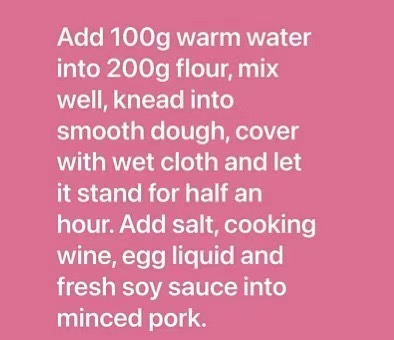
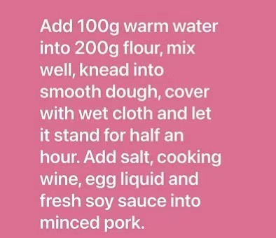

Ingredients: 4 crabs, 200g flour, 300g minced pork, 10g ginger, 30ml cooking wine, 10g shallot, 10ml olive oil, 20g egg liquid, 3G salt, 3 teaspoons ginger juice.


Add ginger slices and shallots into the steamer, and then add crabs. Sprinkle with about 20 ml cooking wine, cover with high heat and steam for 15 minutes. Remove the crab meat and pinch it again by hand in case of any crab shell. Prepare ginger juice. Pour olive oil into the pan, warm oil, add crab powder and stir fry until fragrant. Add 10 ml cooking wine and stir fry well. Then turn off the heat and leave the pan to cool.


 

Knead the dough well again, divide it into long strips, roll it into thin skin, wrap it in stuffing, and then put it into the steamer with oil brush. Each dough should have a gap to avoid adhesion. Steam it in cold water for 10-12 minutes, then it will come out of the pot. When it is hot, it will flow out of the original juice, and the vinegar will make it more delicious